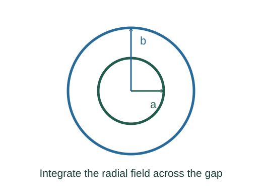
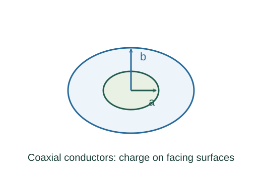

Derive cylindrical and spherical capacitances
Gauss’s law on a coaxial cylinder gives Q/(2πεLr); a concentric sphere gives Q/(4πεr²).
What the symbols mean
a < b: inner and outer radii; L: cylinder length; ε: uniform permittivity; Q: charge magnitude; ΔV: potential-difference magnitude.
When this applies
Coaxial long cylinders without end effects, or concentric spherical conductors; linear homogeneous dielectric.
Developing the argument

Find each gap field from symmetry
Gauss’s law on a coaxial cylinder gives Q/(2πεLr); a concentric sphere gives Q/(4πεr²).
Integrate the cylindrical field
The potential-difference magnitude is the outward radial field integral between a and b.

Integrate the spherical field
The inverse-square integral gives a reciprocal-radius difference.
Divide Q by each voltage
The charge cancels by the capacitance definition. For an isolated sphere, take b to infinity and replace a by R.
A worked example
A spherical capacitor with b = 2a has capacitance 8πεa, twice that of an isolated sphere of radius a in the same medium.
Derivation behind this calculation ↗A point to keep straight
Capacitance is defined between specified conductors and a reference; changing the environment changes that geometry problem.
Check the assumptions and derivation ↗